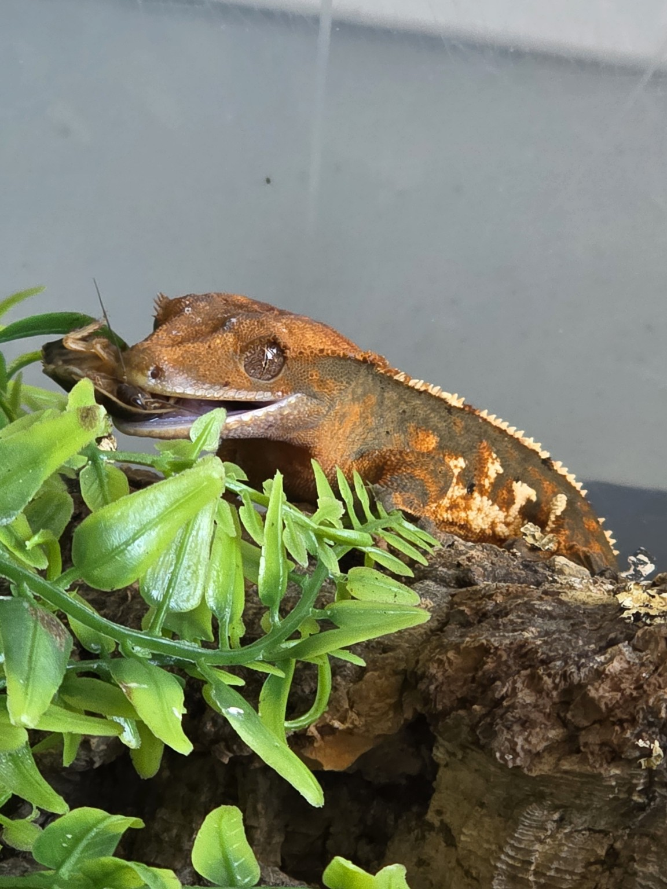

Crested Gecko
Correlophus ciliatus

| Species | Difficulty Level | Size |
|---|---|---|
| Crested Gecko | Beginner | 7-9 in |
| Gargoyle Gecko | Beginner | 7-10 in |
| Chahoua Gecko | Intermediate | 8-12 in |
Natural Habitat
The crested gecko is native to New Caledonia. It is a group of islands in the southwestern Pacific Ocean. These geckos are found primarily in the southern portion of Grande Terrer, the main island, and also found on the isle of Pines. Their habitat is humid forests filled with tress, vines, and dense vegetation. Their special toe bads and long tails help them navigate branches and other surfaces throughout their forest habitat.
Humidity and Water
Crested gecko thrive in environments with moderate to high humidity. The goal should be to keep humidity around 60%-80%. Misting their enclosure helps to maintain humidity levels and provides water droplets for them to drink off the surfaces in their enclosure. There needs be time to allow the enclosure to dry between mistings. A shallow water dish should be made available.
Feeding Habits
Crested gecko are omnivores. They can eat both plant and animal matter. In the wild they consume insects as well as overrippend fruit and nectar. In captivity, they can eat a specially formulated diet, some popular brands are Repashy and Pangea. For insects, crickets, superworms, dubia roaches, and others insects can be offered as feeders.
Breeding
During the breeding season the habitate of the crested gecko becomes very humid. It is important to keep humidity high during this time(78%-80%) to encourage the gecko to breed by mimicing the temperatures and humidity of their breeding season. The female geckos will lay multiple clutches through the season, with two eggs per clutch.
If you would like a more detailed explanation on crested gecko care, or would like additional information on other reptiles please visit this Care Guide